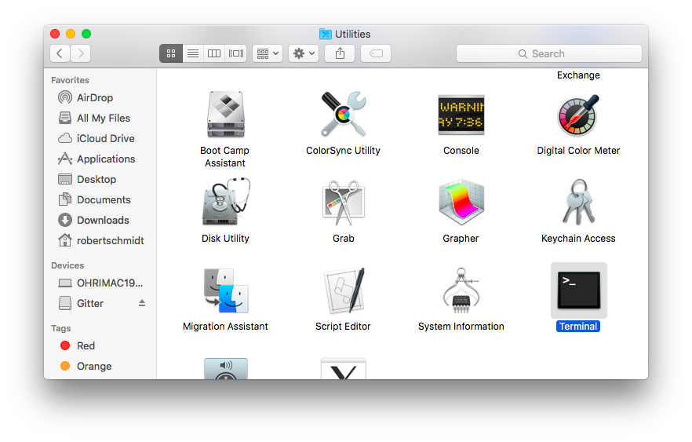
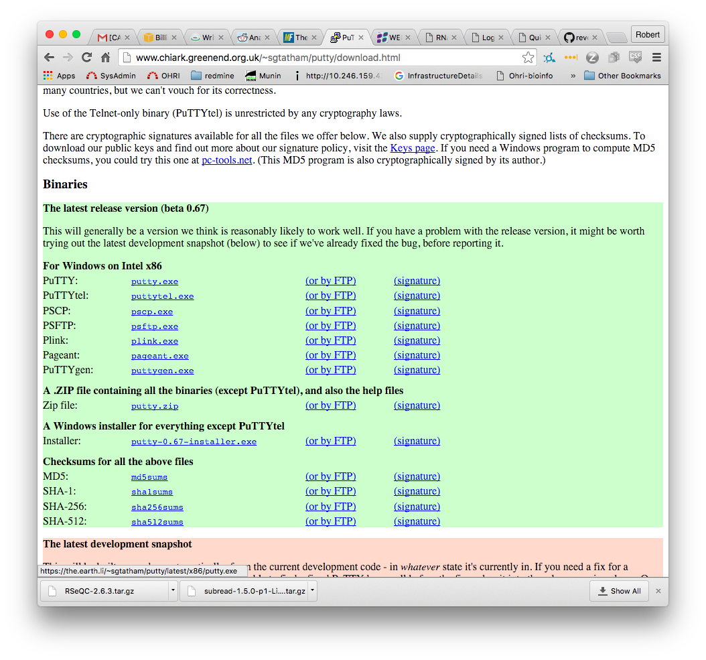

Getting Started
logging in and basic commands
Robert Schmidt|roschmidt@toh.ca


This Presentation
What I hope to cover
- What is SSH?
- Installing SSH (if required)
- logging in and basic file manipulation
- sending files to the "cloud"
What is SSH?
- Secure Shell
- SSH or Secure SHell is a secure way to use a remote machine using a CLI (command line interface)
- This differs from what you are probably used to, which is known as a GUI (graphical user interface)
- File Uploads and downloads
- Along with the cli it also provides ways to upload and download files
- scp, rsync
- Preinstalled on Apple OSX, separate program in Windows
Installing SSH
- OSX: You can find your "terminal" under Applications->Utilities->Terminal
- Windows: Install putty http://www.chiark.greenend.org.uk/~sgtatham/putty/download.html
Finding Terminal on OSX
Downloading Putty
Logging In
oh176336:rnaseq2016 rob$ ssh scn-user-01@user01.scn.ottbioinfo.ca
scn-user-01@user01.scn.ottbioinfo.ca's password:
Last login: Tue Mar 8 18:55:32 2016 from ohout.ottawahospital.on.ca
[scn-user-01@ip-172-31-29-68 ~]$
[scn-user-01@ip-172-31-29-68 ~]$ ml av
Rebuilding cache, please wait ... (written to file) done.
-------------------------------------------------- /software/Lmod/lmod/lmod/modulefiles/Core --------------------------------------------------
lmod/6.0.20 settarg/6.0.20
------------------------------------------------------- /software/easybuild/modules/all -------------------------------------------------------
Autoconf/2.69-GCC-4.8.4 SQLite/3.8.10.2-foss-2015b
Autoconf/2.69-GNU-4.9.3-2.25 (D) SRA-Toolkit/2.5.4-1-centos_linux64
Automake/1.15-GCC-4.8.4 ScaLAPACK/2.0.2-gompi-1.7.20-OpenBLAS-0.2.13-LAPACK-3.5.0
Automake/1.15-GNU-4.9.3-2.25 (D) ScaLAPACK/2.0.2-gompi-2015b-OpenBLAS-0.2.14-LAPACK-3.5.0 (D)
Autotools/20150215-GNU-4.9.3-2.25 Tcl/8.6.4-foss-2015b
Bison/3.0.4-GCC-4.9.3-binutils-2.25 Tcl/8.6.4-goolf-1.7.20 (D)
Bison/3.0.4 (D) Tk/8.6.4-foss-2015b-no-X11
Boost/1.58.0-foss-2015b Tk/8.6.4-goolf-1.7.20-no-X11 (D)
Boost/1.58.0-goolf-1.7.20 (D) TopHat/2.0.14-goolf-1.7.20
Bowtie2/2.2.3-foss-2015b binutils/2.25-GCC-4.9.3-binutils-2.25
Bowtie2/2.2.6-foss-2015b binutils/2.25 (D)
Bowtie2/2.2.7-foss-2015b (D) bzip2/1.0.6-foss-2015b
FFTW/3.3.4-gompi-1.7.20 bzip2/1.0.6-goolf-1.7.20 (D)
FFTW/3.3.4-gompi-2015b (D) cURL/7.43.0-goolf-1.7.20
FPM/1.3.3-Ruby-2.1.6 flex/2.5.39-GCC-4.9.3-binutils-2.25
GCC/4.8.4 flex/2.5.39 (D)
GCC/4.9.3-binutils-2.25 (D) foss/2015b
GMP/6.0.0a-GNU-4.9.3-2.25 gompi/1.7.20
GNU/4.9.3-2.25 gompi/2015b (D)
HISAT2/2.0.1-beta-foss-2015b goolf/1.7.20
Java/1.7.0_80 hwloc/1.10.1-GCC-4.8.4
Java/1.8.0_45 (D) hwloc/1.11.0-GNU-4.9.3-2.25 (D)
M4/1.4.17-GCC-4.8.4 libjpeg-turbo/1.4.0-goolf-1.7.20
M4/1.4.17-GCC-4.9.3-binutils-2.25 libjpeg-turbo/1.4.1-goolf-1.7.20 (D)
M4/1.4.17-GNU-4.9.3-2.25 libpng/1.6.17-goolf-1.7.20
M4/1.4.17 (D) libreadline/6.3-foss-2015b
NASM/2.11.05-goolf-1.7.20 libreadline/6.3-goolf-1.7.20 (D)
NASM/2.11.06-goolf-1.7.20 (D) libtool/2.4.5-GCC-4.8.4
OpenBLAS/0.2.13-GCC-4.8.4-LAPACK-3.5.0 libtool/2.4.6-GNU-4.9.3-2.25 (D)
OpenBLAS/0.2.14-GNU-4.9.3-2.25-LAPACK-3.5.0 (D) libxml2/2.9.2-goolf-1.7.20
OpenMPI/1.8.4-GCC-4.8.4 ncurses/5.9-foss-2015b
OpenMPI/1.8.8-GNU-4.9.3-2.25 (D) ncurses/5.9-goolf-1.7.20 (D)
Python/2.7.10-foss-2015b numactl/2.0.10-GCC-4.8.4
R/3.2.0-goolf-1.7.20 numactl/2.0.10-GNU-4.9.3-2.25 (D)
R/3.2.1-goolf-1.7.20 (D) zlib/1.2.8-foss-2015b
R-bundle-Bioconductor/3.1-goolf-1.7.20-R-3.2.1 zlib/1.2.8-GCC-4.9.3-binutils-2.25
RSeQC/2.6.3-foss-2015b-Python-2.7.10 zlib/1.2.8-goolf-1.7.20
Ruby/2.1.6 zlib/1.2.8 (D)
SAMtools/0.1.19-foss-2015b
---------------------------------------------------------- /software/manual/modules -----------------------------------------------------------
subread/1.5.0-p1
Where:
D: Default Module
Use "module spider" to find all possible modules.
Use "module keyword key1 key2 ..." to search for all possible modules matching any of the "keys".
[scn-user-01@ip-172-31-29-68 ~]$
The command: `tmux`
- What happens when I run a command?
- What happens when I logout?
- Keep my session alive even when I'm not logged in
- tmux list-sessions, attach, detach, next, previous, create
- NOTE: /etc/tmux.conf configured to use ctrl-a in place of default
Sending Files
- scp src dest
- https://winscp.net/eng/download.php
- cyberduck
$ scp -r rnaseq2016 scn-user-10@user10.scn.ottbioinfo.ca: